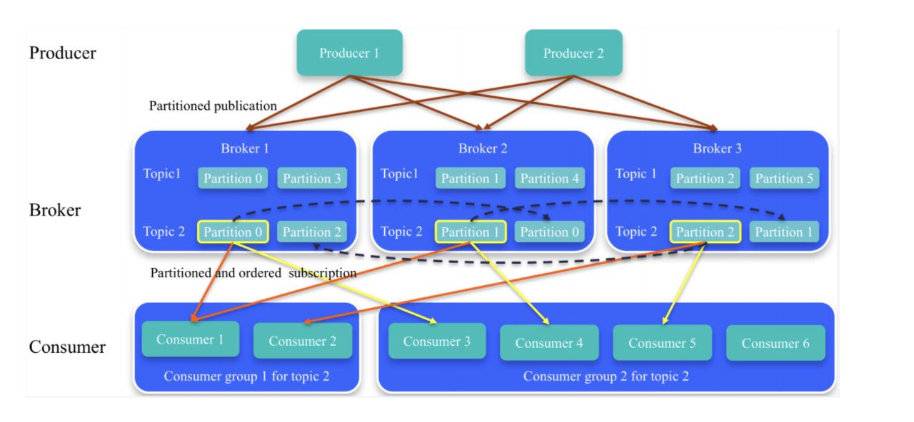

kafka
kafka是什么？
kafka是分布式的，分区的，多副本的，多订阅者，高吞吐量，支持水平扩展，基于zookeeper的分布式消息系统。常用于日志处理，高性能消息服务。
kafka设计理念
● 低延迟：以时间复杂为O(1)的方式提供消息持久化的能力，对TB级别的数据也能提供 常数级别的复杂度的访问能力，最低延迟只有几毫秒。 ● 高吞吐：每秒可处理几十万条消息，即使在非常廉价的商用机器上也能做到单机支持 每秒十万条以上消息的传输。 ● 高伸缩：消息按照 topic 进行分类，每个topic下有多个 partition， topic中的 partition 可以分布在不同的主机上，防止消息丢失。 ● 容错性： Kafka 集群中的一个节点宕机失败以后，集群仍然可以正常工作。 ● 高并发：同时支持数千个客户端读写
kafka为什么这么快

zookeeper在kafka中的作用
- broker注册：
/brokers/ids/{broker.id} - topic注册：
/brokers/topics/{topic_name} - 生产者负载均衡：
- 消费组注册：
/ls/consumers/{group_id}- ids：消费者与分组对应关系
- owners：记录消费组消费的topic信息
- offsets：记录每个topic下每个partition的offset
kafka重要组成部分

- Broker：kafka中每一个服务节点称为broker
- Topic：逻辑概念，一系列消息的集合。就是给消息做分类，提高性能
- Partition：分区存储，一个topic分布到多个partition进行存储，
- Replicas：每个partition的消息副本，保证消息不丢失
- Producer：消息的生产者，给消费者发送消息
- Consumer：消息的消费者
- Consumer Group：逻辑概念，对消费者进行分组
- Offset：partition中每个消息都有一个连续的序列号叫做offset，消息的唯一标识
- Message：消息是kafka最基本的数据单元
topic和partition
Topic是用于存储消息的逻辑概念，可以看作一个消息集合。每个topic可以有多个生产者向其推送消息，也可以有任意多个消费者消费其中的消息。 每个topic可以划分多个分区（每个Topic至少有一个分区），同一topic下的不同分区包含的消息是不同的。每个消息在被添加到分区时，都会被分配一个offset（称之为偏移量），它是消息在此分区中的唯一编号，kafka通过offset保证消息在分区内的顺序，offset的顺序不跨分区，即kafka只保证在同一个分区内的消息是有序的。
kafka高吞吐量的原因（高性能）
1、采用顺序写的方式存储数据。

- 批量发送（异步发送模式中）
- 零拷贝
kafka高可用如何保证？
kafka可靠性依靠的是副本机制。（副本同步队列）副本维护的有资格的follower节点。
- 副本的所有节点和zookeeper保持连接状态
- 副本的最后一条消息的offset和leader的最后一条消息的offset不能超过阀值。
日志保留策略
无论消费者是否消费了消息，kafka都会保存消息，只是不会长期保存。
- 根据消息保留的时间，超过保存时间，就可以删除日志。
- 根据topic存储的数据大小，当topic日志文件大小达到阀值，删除老的日志。
日志压缩策略
kafka可以定期针对相同key的消息进行合并，只保留最新的value值。
消息可靠性机制
没有一个中间件能够做到百分之百的完全可靠，可靠性更多的还是基于几个9的衡量指标，比如4个9、5 个9. 软件系统的可靠性只能够无限去接近100%，但不可能达到100%。所以kafka如何是实现最大可能 的可靠性呢？
- 分区副本， 你可以创建更多的分区来提升可靠性，但是分区数过多也会带来性能上的开销，一般 来说，3个副本就能满足对大部分场景的可靠性要求
- acks，生产者发送消息的可靠性，也就是我要保证我这个消息一定是到了broker并且完成了多副 本的持久化，但这种要求也同样会带来性能上的开销。它有几个可选项
- 1 ，生产者把消息发送到leader副本，leader副本在成功写入到本地日志之后就告诉生产者 消息提交成功，但是如果isr集合中的follower副本还没来得及同步leader副本的消息， leader挂了，就会造成消息丢失
- -1 ，消息不仅仅写入到leader副本，并且被ISR集合中所有副本同步完成之后才告诉生产者已 经提交成功，这个时候即使leader副本挂了也不会造成数据丢失。
- 0：表示producer不需要等待broker的消息确认。这个选项时延最小但同时风险最大（因为 当server宕机时，数据将会丢失）。
- 保障消息到了broker之后，消费者也需要有一定的保证，因为消费者也可能出现某些问题导致消 息没有消费到
- enable.auto.commit默认为true，也就是自动提交offset，自动提交是批量执行的，有一个时间窗 口，这种方式会带来重复提交或者消息丢失的问题，所以对于高可靠性要求的程序，要使用手动提 交。 对于高可靠要求的应用来说，宁愿重复消费也不应该因为消费异常而导致消息丢失
如何处理所有的Replica不工作的情况
在ISR中至少有一个follower时，Kafka可以确保已经commit的数据不丢失，但如果某个Partition的所有Replica都宕机了，就无法保证数据不丢失了
- 等待ISR中的任一个Replica"活"过来，并且选它作为Leader
- 选择第一个"活"过来的Replica（不一定是ISR中的）作为Leader
如果一定要等待ISR中的Replica"活"过来，那不可用的时间就可能会相对较长。而且如果ISR中的所有Replica都无法"活"过来了，或者数据都丢失了，这个Partition将永远不可用。 选择第一个"活"过来的Replica作为Leader，而这个Replica不是ISR中的Replica，那即使它并不保证已经包含了所有已commit的消息，它也会成为Leader而作为consumer的数据源（前文有说明，所有读写都由Leader完成）。 Kafka0.8.*使用了第二种方式。Kafka支持用户通过配置选择这两种方式中的一种，从而根据不同的使用场景选择高可用性还是强一致性。
文件存储方式
在kafka文件存储中，同一个topic下有多个不同的partition，每个partition为一个目录，partition的名称规则为：topic名称+有序序号，第一个序号从0开始，最大的序号为partition数量减1，partition是实际物理上的概念，而topic是逻辑上的概念，partition还可以细分为segment，这个segment是什么呢？ 假设kafka以partition为最小存储单位，那么我们可以想象当kafka producer不断发送消息，必然会引起partition文件的无线扩张，这样对于消息文件的维护以及被消费的消息的清理带来非常大的挑战，所以kafka以segment为单位又把partition进行细分。
每个partition相当于一个巨型文件被平均分配到多个大小相等的segment数据文件中（每个setment文件中的消息不一定相等），这种特性方便已经被消费的消息的清理，提高磁盘的利用率。 segment file组成：由2大部分组成，分别为index file和data file，此2个文件一一对应，成对出现，后缀".index"和".log"分别表示为segment索引文件、数据文件。
segment文件命名规则：partion全局的第一个segment从0开始，后续每个segment文件名为上一个segment文件最后一条消息的offset值。数值最大为64位long大小，19位数字字符长度，没有数字用0填充
消息确认的方式
- 自动提交
- 手动提交
- 手动异步提交
- 手动同步提交
消息的消费原理
kafka的分区分配策略
在kafka中每个topic一般都会有很多个partitions。为了提高消息的消费速度，我们可能会启动多个consumer去消费； 同时，kafka存在consumer group的概念，也就是group.id一样的consumer，这些consumer属于一个consumer group，组内的所有消费者协调在一起来消费消费订阅主题的所有分区。当然每一个分区只能由同一个消费组内的consumer来消费，那么同一个consumer group里面的consumer是怎么去分配该消费哪个分区里的数据，这个就设计到了kafka内部分区分配策略（Partition Assignment Strategy） 在 Kafka 内部存在两种默认的分区分配策略：Range（默认） 和 RoundRobin。通过：partition.assignment.strategy指定consumer rebalance 当以下事件发生时，Kafka 将会进行一次分区分配：
- 同一个consumer group内新增了消费者
- 消费者离开当前所属的consumer group，包括shuts down 或crashes
- 订阅的主题新增分区（分区数量发生变化）
- 消费者主动取消对某个topic的订阅
- 也就是说，把分区的所有权从一个消费者移到另外一个消费者上，这个是kafka consumer 的rebalance机制。如何rebalance就涉及到前面说的分区分配策略。
三种分区策略
1、Range 策略（默认）
0 ，1 ，2 ，3 ，4，5，6，7，8，9
c0 [0,3] c1 [4,6] c2 [7,9]
10(partition num/3(consumer num) =3
2、roundrobin 策略，使用轮询分区策略必须满足两个条件
- 每个主题的消费者实例具有相同数量的流
- 每个消费者订阅的主题必须是相同的
0 ，1 ，2 ，3 ，4，5，6，7，8，9
c0,c1,c2
c0 [0,3,6,9]
c1 [1,4,7]
c2 [2,5,8]
3、StrickyAssignor粘滞策略， 有两个主要目标：
- 分区的分配尽可能的均匀
- 分区的分配尽可能和上次分配保持相同
谁来执行Rebalance以及管理consumer的group呢？
Kafka提供了一个角色：coordinator来执行对于consumer group的管理，Kafka提供了一个角色： coordinator来执行对于consumer group的管理，当consumer group的第一个consumer启动的时 候，它会去和kafka server确定谁是它们组的coordinator。之后该group内的所有成员都会和该 coordinator进行协调通信
如何确定coordinator？
consumer group如何确定自己的coordinator是谁呢, 消费者向kafka集群中的任意一个broker发送一个 GroupCoordinatorRequest请求，服务端会返回一个负载最小的broker节点的id，并将该broker设置 为coordinator
kafka如何保证消息顺序性
- 一个 topic，一个 partition，一个 consumer，内部单线程消费，单线程吞吐量太低，一般不会用这个。
- 写 N 个内存 queue，具有相同 key 的数据都到同一个内存 queue；然后对于 N 个线程，每个线程分别消费一个内存 queue 即可，这样就能保证顺序性。
kafka日志管理
1、日志写入策略
一个topic的多个partition在物理磁盘上的保存路径，路径保存在 /tmp/kafka-logs/topic_partition，包 含日志文件、索引文件和时间索引文件。
在partition中如何通过offset查找message
查找的算法：
- 根据offset的值，查找segment段中的index索引文件。由于索引文件命名是以上一个文件的最后 一个offset进行命名的，所以，使用二分查找算法能够根据offset快速定位到指定的索引文件。
- 找到索引文件后，根据offset进行定位，找到索引文件中的符合范围的索引。（kafka采用稀疏索 引的方式来提高查找性能）
- 得到position以后，再到对应的log文件中，从position出开始查找offset对应的消息，将每条消息 的offset与目标offset进行比较，直到找到消息
2、日志清理策略
日志的分段存储，一方面能够减少单个文件内容的大小，另一方面，方便kafka进行日志 清理。日志的清理策略有两个。
- 根据消息的保留时间，当消息在kafka中保存的时间超过了指定的时间，就会触发清理过程
- 根据topic存储的数据大小，当topic所占的日志文件大小大于一定的阀值，则可以开始删除最旧的 消息。kafka会启动一个后台线程，定期检查是否存在可以删除的消息。
通过log.retention.bytes和log.retention.hours这两个参数来设置，当其中任意一个达到要求，都会执行删除。默认的保留时间是：7天
3、日志压缩策略
数据库同步服务如何保证消息的顺序性
mq挤压消息如何解决
一个消费者一秒是 1000 条，一秒 3 个消费者是 3000 条，一分钟就是 18 万条。所以如果你积压了几百万到上千万的数据，即使消费者恢复了，也需要大概 1 小时的时间才能恢复过来。
一般这个时候，只能临时紧急扩容了，具体操作步骤和思路如下：
- 先修复 consumer 的问题，确保其恢复消费速度，然后将现有 consumer 都停掉。
- 新建一个 topic，partition 是原来的 10 倍，临时建立好原先 10 倍的 queue 数量。
- 然后写一个临时的分发数据的 consumer 程序，这个程序部署上去消费积压的数据，消费之后不做耗时的处理，直接均匀轮询写入临时建立好的 10 倍数量的 queue。
- 接着临时征用 10 倍的机器来部署 consumer，每一批 consumer 消费一个临时 queue 的数据。这种做法相当于是临时将 queue 资源和 consumer 资源扩大 10 倍，以正常的 10 倍速度来消费数据。
- 等快速消费完积压数据之后，得恢复原先部署的架构，重新用原先的 consumer 机器来消费消息。
mq 中的消息过期失效了
通过历史数据手动写程序进行修复。
参考《kafka技术内幕》，kafka官方文档。